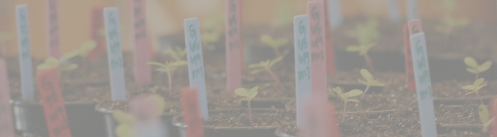
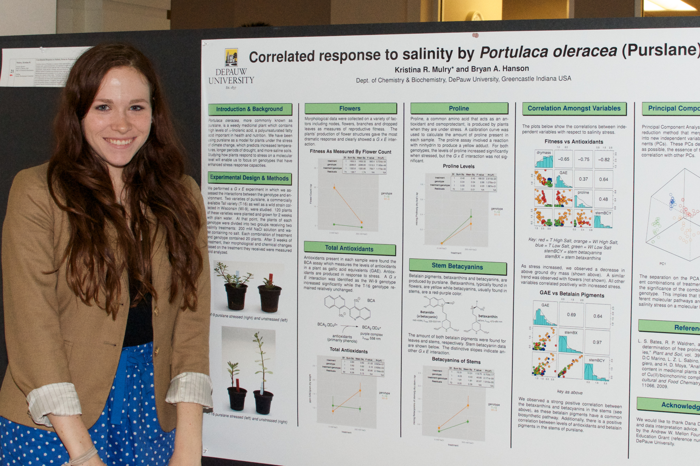
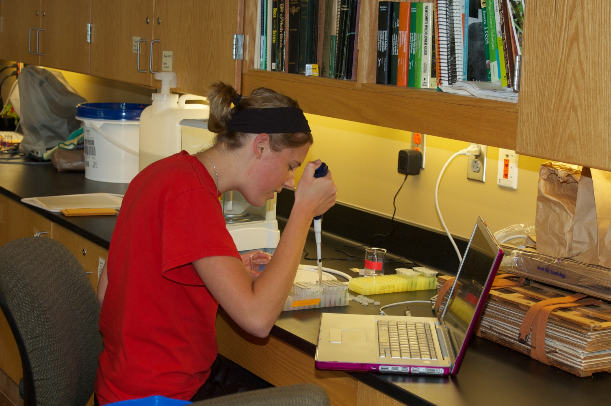
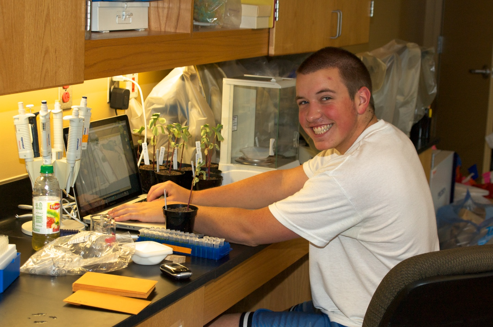
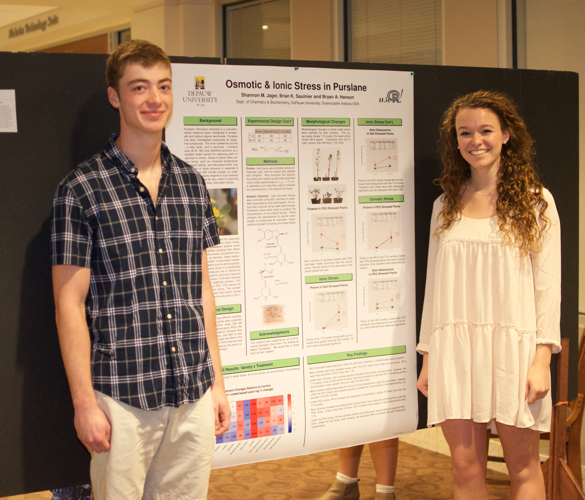

Plant Metabolomics: Where Spectroscopy Meets Evolution & Ecology
This page honors and makes available the research of my students. However, it is no longer being updated, as I retired in June 2018.
In my group, we conduct research on how plants respond to the stress of climate change. Such stress can take the form of too much heat, too much salt in the soil, or too little water. We use methods from metabolomics, chemistry and ecology, and benefit from collaboration with Prof. Dana Dudle in the Biology Department. We greatly appreciate support from DePauw’s Science Research Fellows program (now discontinued), the Faculty Development Committee, and the Mellon Foundation (through FDC).
Our plant of choice is Portulaca oleracea, a weed more commonly known as purslane. We have chosen purslane because it is easy to grow and is interesting from a medicinal/nutritional perspective - it has the most omega-3 fatty acids of any plant. Our original objective was to determine whether purslane’s response to stress has a genetic component which also contributes to reproductive fitness. We have been able to confirm this, and we are now focussed on understanding the molecular nature of purslane’s response: What pathways are activated? What molecules are involved?
Our approach is to blend metabolomic and ecological methods. Metabolomics is the study of an organism’s metabolites under a controlled set of conditions, in our case, normal versus stressful conditions. As far as possible, one tries to measure all the metabolites at once, in a holistic fashion, which is not an easy feat. Typically, this is done with NMR, MS, IR, or other forms of spectroscopy. We also supplement these instrumental techniques with more traditional single point chemical measurements such as antioxidant levels. From the ecological perspective, we record parameters of plant growth that represent measures of fitness, such as biomass produced, the number of flowers, and so forth. To be meaningful, we need to conduct these experiments on large numbers of plants. The resulting data sets, composed of very different sorts of measurements, represent the state of the plant under the conditions tested. We use various statistical methods to figure out which treatments have produced an interesting response, and whether those responses vary with genotype. Our statistical analyses are done with the open source computational statistical program R and in the case of spectroscopic data, with the ChemoSpec package for R, written by Bryan.


The following students have carried out this research. Click on their names to download the posters they prepared about their work:
- Academic year 2016-2017
- Summer 2015
- Summer 2013
- Kristina Mulry Kristina’s work has been published
- Fall 2012
- Summer 2011
- Matt Kukurugya
- Polly Haight
- Vincent Guzzetta
- Matt Keinsley
- Poster presented at the joint annual meeting of the Society for Economic Botany and The Botanical Society of America in St. Louis.
- Summer 2010
- Elizabeth Botts
- Matt Keinsley
- Summer 2009 (The Pioneers!)
- 2008 (Bryan’s first metabolomics work!)
- Poster evaluating various brands of Saw Palmetto (Serenoa repens) by NMR and IR. Presented at the Society for Economic Botany meeting, July 2008.


